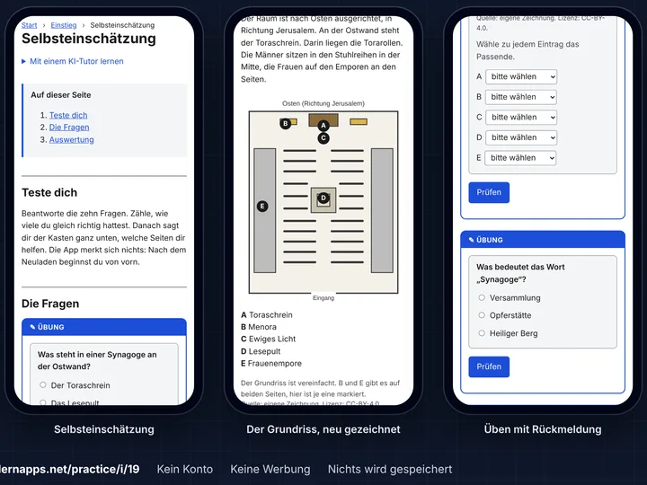

Üben mit genau dem Stoff, der drankommt
Dein KI-Assistent macht aus den Arbeitsblättern eine App zum Üben. Kopier diesen Satz in ein neues Gespräch:
Lies https://lernapps.net/practice/llms.txt und hilf mir, eine App zum Üben für <Anlass> zu machen.Zum Beispiel: „für die Mathearbeit nächste Woche“ oder „für eine Vertretungsstunde in Englisch, Klasse 7“.
-
Umfang abstecken

Fotos der Arbeitsblätter, dazu Fach, Klasse und was drankommt.
-
Das macht dein Assistent für dich
Erklärungen und Übungen, genau für diesen Stoff, in wenigen Minuten.
-
Üben

Mit einem Link, auf jedem Gerät, ohne Konto. Die Reli-App ausprobieren →
Das brauchst du
- Einen KI-Assistenten, der programmieren kann, etwa Claude Code, Codex oder Gemini. Oft steckt er in einem Abo, das du schon hast.
- Ein kostenloses GitHub-Konto. Über GitHub reichst du den Inhalt ein und bekommst den Link zur App.
Inhalt und App sind öffentlich, also ohne Namen und Schule. Ein echtes Gespräch ansehen · Einreichen Schritt für Schritt · Datenschutz
Für Maintainer: Betrieb · Prüfungen · Evaluation der Anleitung · Architektur (Englisch)